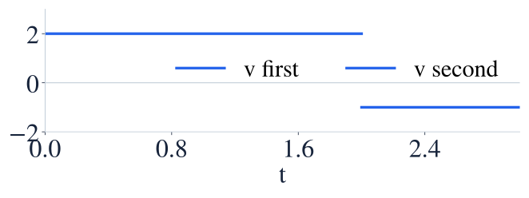
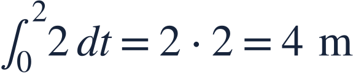
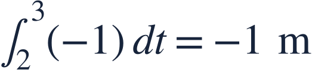
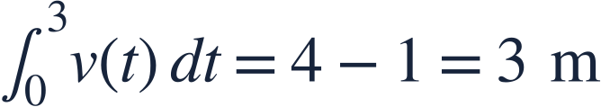
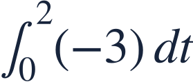

Accumulation and definite integrals
누적과 정적분
A definite integral accumulates signed change, so areas below the axis subtract.
정적분은 부호 있는 변화를 누적하므로 축 아래의 넓이는 뺍니다.
A definite integral accumulates signed change, so areas below the axis subtract.
정적분은 부호 있는 변화를 누적하므로 축 아래의 넓이는 뺍니다.
Velocity is in m/s and time is in seconds. Area gives displacement in meters.
속도 단위는 m/s, 시간 단위는 초입니다. 넓이로 변위를 구합니다.

Positive and negative rectangles contribute opposite signed changes.
양의 직사각형과 음의 직사각형은 반대 부호의 변화를 만듭니다.

The first interval contributes positive displacement.
첫 구간은 양의 변위를 만듭니다.

The second interval reverses direction and subtracts one meter.
두 번째 구간에서는 반대로 움직여 1미터를 뺍니다.

Net displacement is 3 m; total distance would be 5 m.
순변위는 3m입니다. 총 이동거리는 5m입니다.
The definite integral is signed area, not automatically total geometric area.
정적분은 부호 있는 넓이이며 언제나 기하학적 넓이의 합인 것은 아닙니다.

Find the signed accumulation and interpret its sign.
부호 있는 누적량을 구하고 부호의 뜻을 설명하세요.